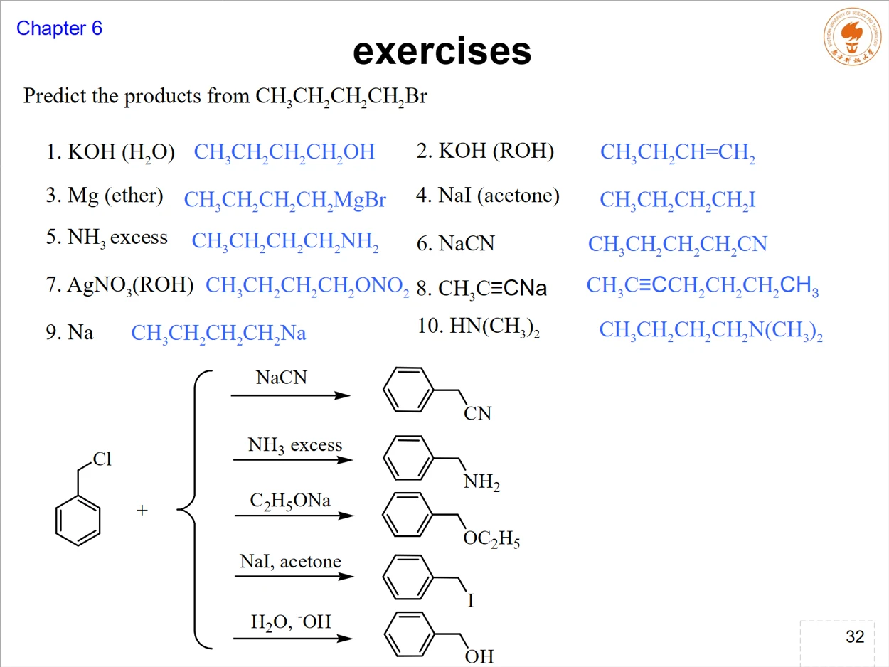
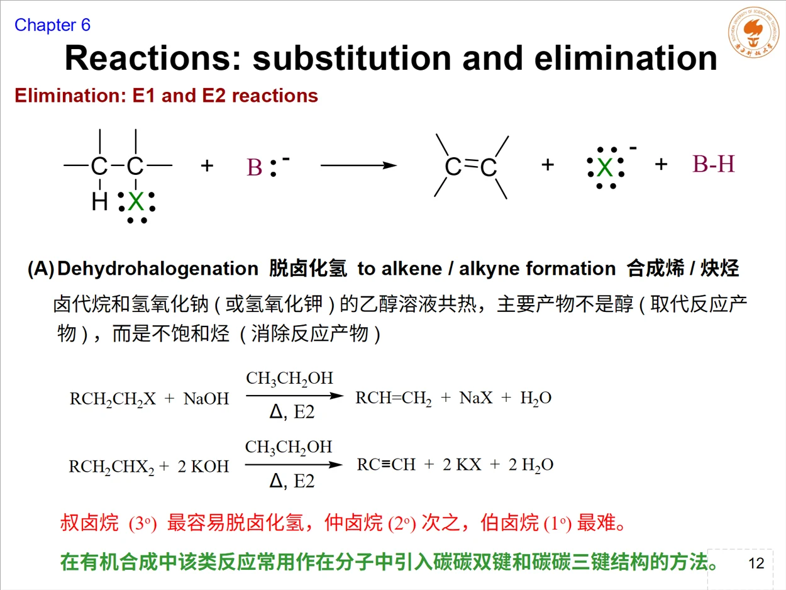
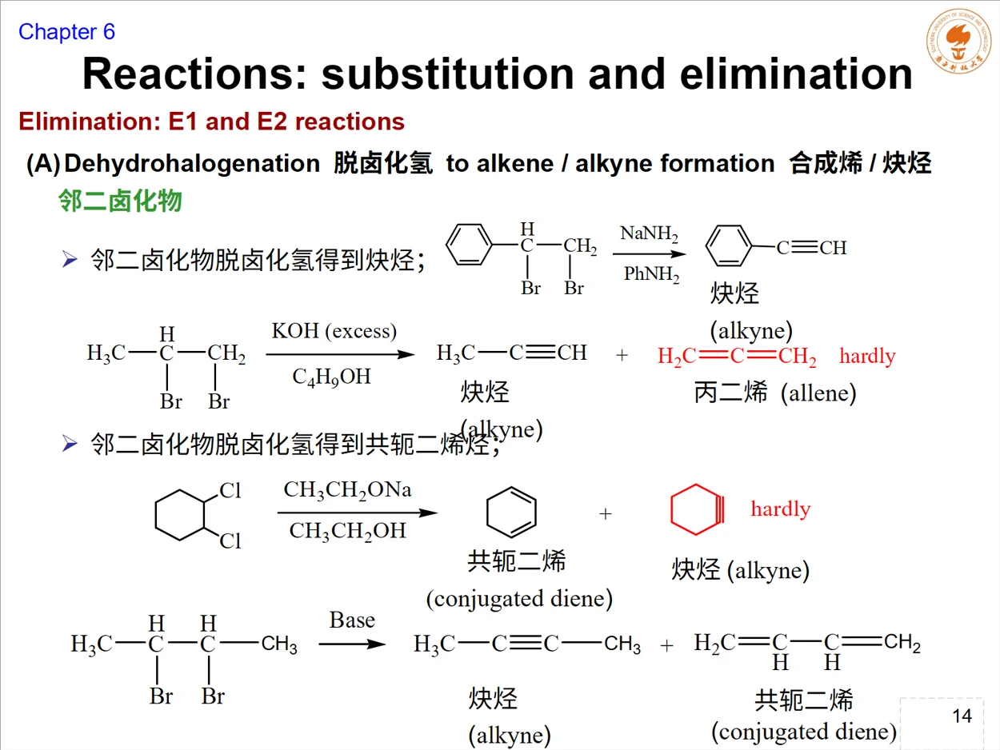
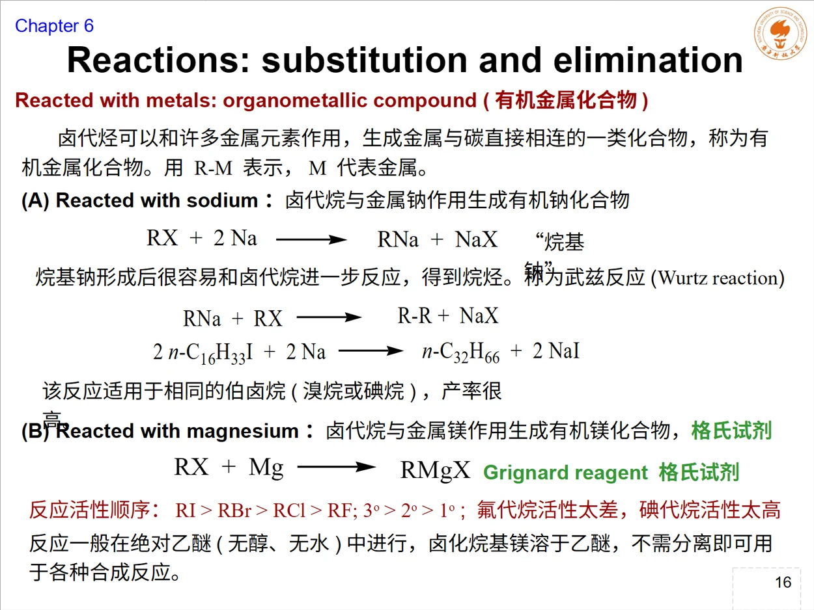
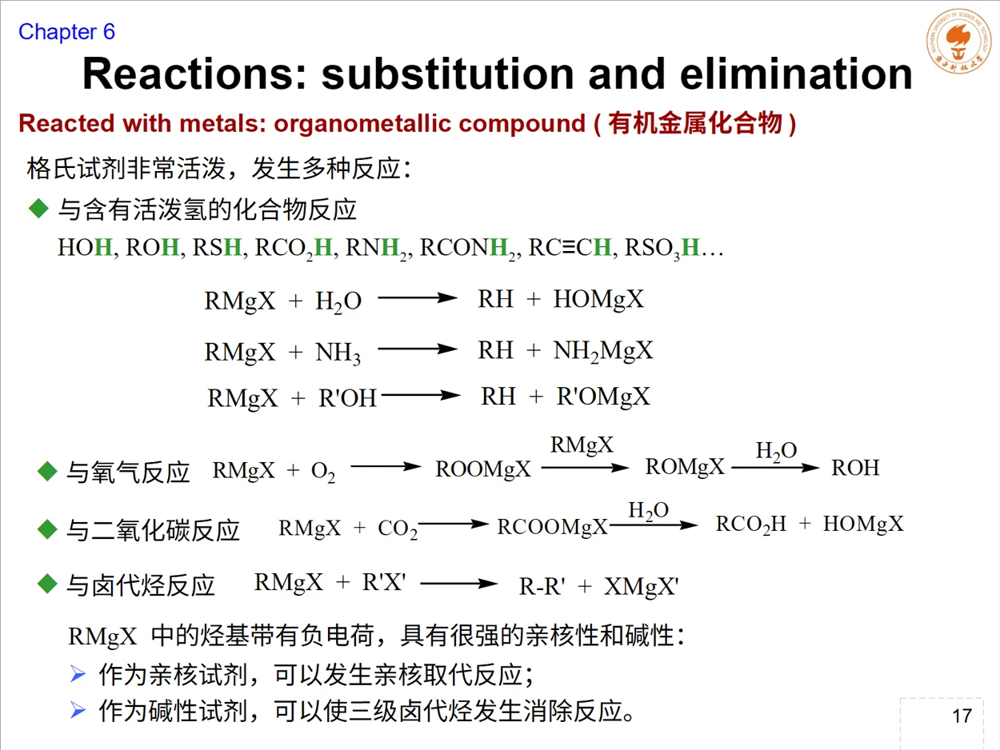
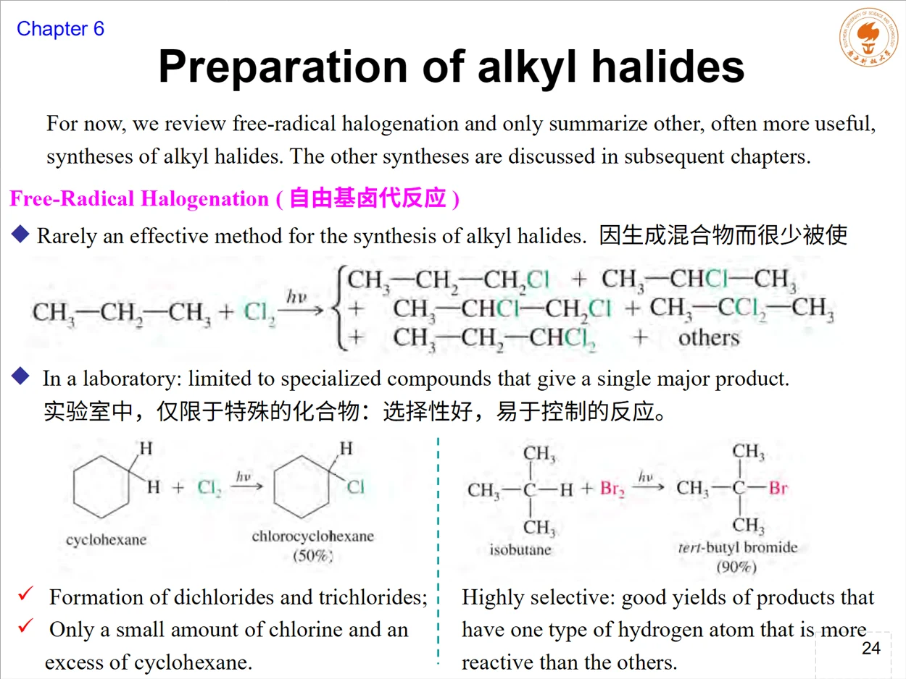
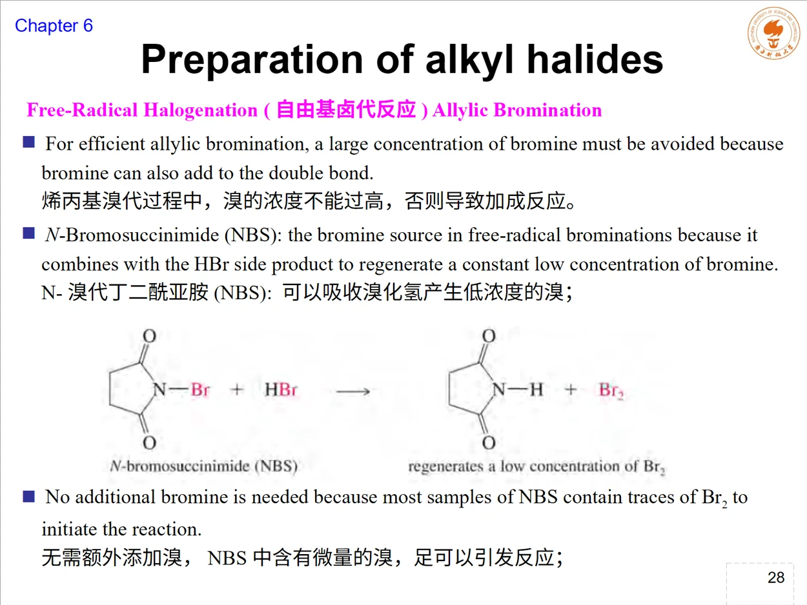
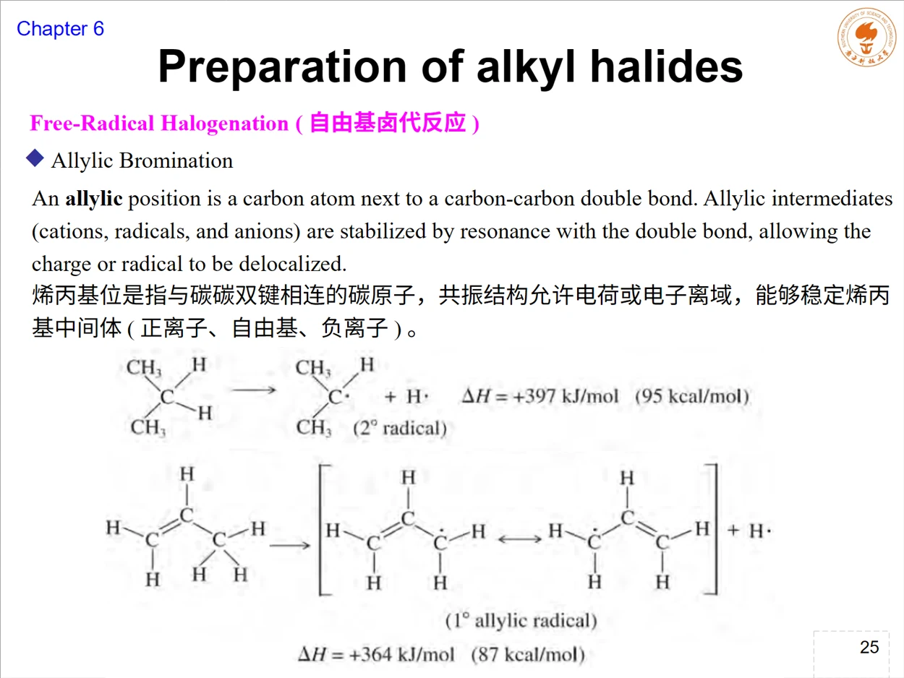
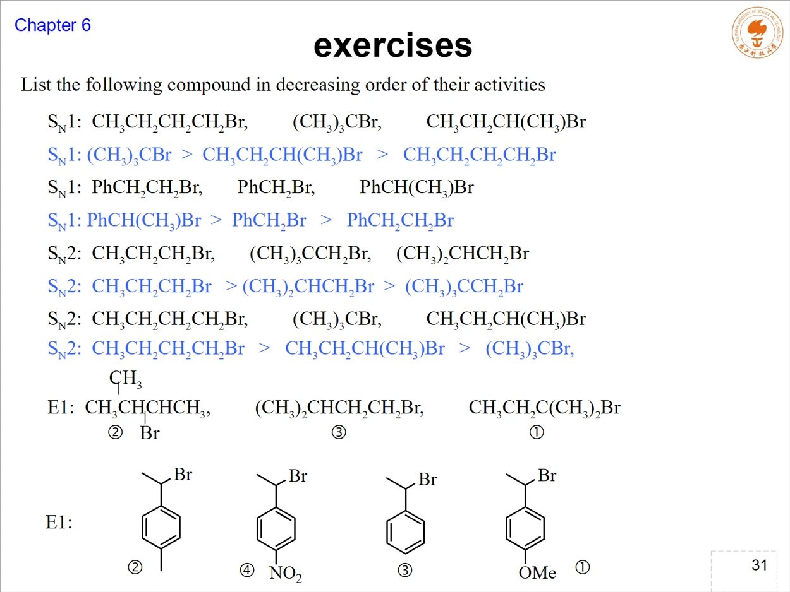
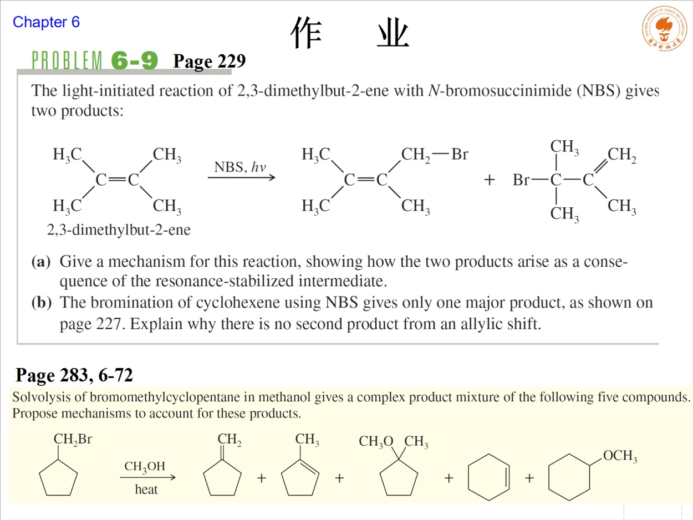

WEBSITE LESSON 13 · LECTURE 12 · CHAPTER 6-4
卤代烷反应、有机金属与烯丙位溴化
Alkyl halide reactions, organometallic compounds and allylic bromination
一、反应地图：同一类底物，试剂决定出口
本讲承接第12课的E1/E2与SN1/SN2竞争，把卤代烷 R–X 当作合成平台。先识别试剂的角色，再判断它是在取代碳上的X、夺取β-H、提供氢负性、还是把R变成有机金属。课件对应Lecture 12 / Chapter 6-4，共33页。
| 试剂与条件 | 主要转化 | 判断抓手 |
|---|---|---|
| HO⁻ / H₂O | R–OH | 水解，亲核取代条件 |
| RO⁻ / ROH，加热 | 醚或烯烃 | 伯底物偏SN2，强碱和加热提高E2 |
| CN⁻、NH₃、炔基负离子 | 腈、胺、炔基取代物 | SN2；CN⁻还能把碳链增长一个碳 |
| LiAlH₄、NaBH₄等 | R–H | 还原C–X；按试剂、底物和无水条件核对 |
| Mg / 绝对醚 | R–MgX | 生成格氏试剂，随后可作强碱或亲核体 |
| Na / 醚或加热、NBS / hν | R–R或烯丙基溴 | 分别识别Wurtz偶联与自由基烯丙位溴化 |
“卤代烷都能被同一种试剂按同一方式处理”是常见误区。底物级数、离去基团、溶剂、温度、碱性与亲核性共同决定主路径；图表只能作为可比条件下的起点。
二、取代与鉴别：把亲核体和实验信号对应起来
水解、醇解、氨解、氰基化和炔基化都可看作卤素被新亲核体替代。伯卤代烷尤其适合SN2；氨通常需要大过量，以减少生成的一级胺继续烷基化，控制多级胺副产物。
| 反应 | 试剂/现象 | 产物与用途 |
|---|---|---|
| 醇解 | RONa / ROH，加热 | R–OR′；是Williamson醚合成的卤代烷支路 |
| 氨解 | NH₃大过量 | R–NH₂为主，过量氨抑制继续烷基化 |
| 氰基化 | NaCN或KCN，醇中回流 | R–CN；相对于R–X增加一个碳，可继续水解成酸或酰胺 |
| 卤素交换 | NaI / 丙酮 | R–Cl或R–Br变为R–I，NaCl/NaBr沉淀推动平衡 |
| 硝酸银试验 | AgNO₃ / 乙醇，观察AgX | 离去的X⁻与Ag⁺沉淀；RI最快，RBr次之，RCl最慢 |

AgNO₃试验同时受到离去基团和碳骨架影响：同一R下通常RI > RBr > RCl；同一卤素下，能形成更稳定正离子的底物更快。苄基型和烯丙基型卤代烷反应快，而乙烯基卤、芳基卤不能直接套用这套醇解电离判断。
三、还原：把R–X变成R–H
卤代烷还原的净变化是用H替换X。课件列出LiAlH₄、NaBH₄、催化氢解、Zn/HCl以及Na/液氨等方法。LiAlH₄中的氢负性氢以亲核方式进攻带部分正电的碳，X⁻离去；反应必须避水，通常使用无水乙醚或四氢呋喃。
| 试剂 | 课件要点 | 安全/条件提醒 |
|---|---|---|
| LiAlH₄ | 可还原多类卤代烷；一级底物常按SN2理解 | 遇水剧烈放氢，使用无水醚或THF |
| NaBH₄ | 课件强调对二级、三级卤代烷较适用 | 可在醇中使用，但会逐渐分解 |
| 催化氢解 | Pt或Pd催化H₂参与还原 | 具体底物还要检查其他可还原官能团 |
| Zn/HCl、Na/NH₃ | 提供还原条件，双键构型问题需按题设判断 | 不要把不同试剂的选择性混写 |
三级卤代烷在强还原条件下容易伴随消除，因此“能还原所有类型”不能脱离课件给出的条件和底物类型直接套用。解题时写出试剂、溶剂与温度，再判断是否有E2竞争。
四、消除与邻二卤化物：一次或两次脱去卤素
乙醇溶液中的KOH或NaOH加热，常将卤代烷导向脱卤化氢。叔卤通常比仲卤更易消除，伯卤更难；但具体主产物仍需检查β-H、碱的位阻、Zaitsev/Hofmann取向与anti几何。

邻二卤化物可连续脱去两分子HX，得到炔烃。若底物安排两个双键相邻，还可继续讨论共轭二烯与累积二烯的连接关系。这里的“脱卤化氢”移走H与X；“脱卤素”则是在Zn或Ni等条件下直接移去两个卤素，净生成烯烃。

氯仿遇空气或日光会生成有毒光气，因此通常用棕色瓶并加入少量乙醇破坏已生成的光气。这一页属于课件中的用途与安全提醒，不应误当成普通卤代烷消除机理。
五、有机金属：让碳直接连接金属
金属与碳直接相连的化合物可写作 R–M。C–M键极化使R端具有明显的碳负性，既可作强碱，也可作强亲核体。命名时要先判断它是简单的“烷基金属”、金属卤化物，还是硼烷、硅烷、锡烷的有机衍生物。

Wurtz反应：相同伯卤代烷偶联
卤代烷先形成R–Na，随后R–Na与另一分子R–X反应，得到R–R。Wurtz反应适合相同的伯溴代烷或伯碘代烷；若混用两种不同R–X，会形成多种交叉偶联产物，选择性下降。
格氏试剂：R–MgX
格氏试剂通常在绝对乙醚中生成，醚氧配位稳定镁中心，反应液往往不经分离就用于后续合成。课件给出的反应活性顺序为 RI > RBr > RCl > RF；烃基一侧通常为3° > 2° > 1°，但氟代烷太不活泼，碘代烷可能过于活泼。
六、格氏试剂的边界：强碱与强亲核体不能遇活泼氢
RMgX中的R端具有强碱性和强亲核性。含O–H、N–H、S–H、羧酸O–H、酰胺N–H、末端炔C–H或磺酸O–H的物质都会质子化R端，直接消耗格氏试剂：
因此制备格氏试剂必须避免水、醇、胺和酸性杂质。除酸碱反应外，格氏试剂还可与氧气、二氧化碳、卤代烃等反应；处理三级卤代烃时，它也可能作为碱促成消除。

七、卤代烷制备：自由基卤化的选择性限制
自由基卤化能制备卤代烷，但普通烷烃常生成异构体混合物，因此实验合成通常只选氢类型单一或选择性足够高的底物。课件提醒：氯气少量、环己烷过量时，可提高单一取代产物的比例；复杂混合物则不适合作为高选择性制备方法。
烯丙位是紧邻C=C的sp³碳。烯丙基正离子、自由基与负离子都能通过π体系共振离域，因此烯丙位C–H键较易参与自由基卤化。

烯丙位要和乙烯基位区分：CH₂=CH–CH₂X是烯丙基卤，CH₂=CH–X是乙烯基卤。前者的反应中心在双键旁的sp³碳，后者的C–X直接连在sp²碳上，不能用同一套SN2直觉处理。
八、烯丙位溴化：NBS维持低浓度Br₂
自由基烯丙位溴化常用N-溴代丁二酰亚胺（NBS）和光照。溴浓度不能过高，否则Br₂会加成到双键；NBS与副产物HBr反应，持续再生低浓度Br₂，让溴原子参与烯丙位自由基链反应。

由于烯丙基自由基有两个共振式，溴可能在两个末端位置形成两个产物。2,3-二甲基丁-2-烯与NBS、hν的课件题正是这一点：一个产物在原双键端的甲基上溴化，另一个产物来自共振后另一端的溴化。先画自由基的两个共振式，再从每个位置补上Br，是比死记产物更稳的做法。

若环己烯使用NBS只给一个主要产物，要检查另一个共振位置是否与原结构等价，或另一支路是否不能形成新的独立产物。不能把“存在共振”机械等同于“必有两个不同产物”。
九、综合练习：先按试剂分组，再按底物修正

比较活性时不要把SN1、SN2和E1的排序混成一张表。SN1优先看正离子稳定性和离去能力；SN2优先看反应中心位阻和亲核体；E1依赖电离后正离子与β-H；E2则同时看碱、β-H和空间排列。

- 写出底物级数和反应中心，明确X连在sp³还是sp²碳上。
- 给试剂贴上亲核体、碱、还原剂、金属插入或自由基溴源标签。
- 先列可行路径，再检查离去基团、溶剂、温度、β-H和共振。
- 所有产物题保留少量但机理允许的支路；“主要产物”才做选择性比较。
十、复习与第13课测验
考前八问：R–X的反应中心是什么杂化？试剂扮演什么角色？SN2是否受位阻限制？是否有β-H可走E2？还原条件是否无水？Mg生成的是否是R–MgX？格氏试剂会不会被活泼氢消耗？NBS题是否画过两个烯丙基自由基共振式？
为什么NaCN能增长一个碳？
CN⁻通过碳端SN2进攻R–X，产物R–C≡N中包含CN⁻提供的碳。腈再水解可转为羧酸或酰胺，因此常作为延长碳链的入口。
Wurtz为什么偏好相同的伯卤代烷？
相同底物只需关注R–R偶联；混用两种卤代烷会产生两种自偶联物和一种交叉偶联物，产物混合使分离和控制变差。三级底物还会增加消除竞争。
NBS的关键不是“溴更强”吗？
关键是把Br₂维持在低浓度，减少对C=C的加成，同时让烯丙位自由基链反应持续进行。选择性来自烯丙基中间体的稳定化与试剂浓度控制。
第13课测验：22题，32分 → 上一课：E1/E2消除与取代竞争
依据用户上传的33页 Org. Chem. Lect. 12 (Chapter 6-4) 整理。关于格氏试剂边界、Wurtz选择性和NBS低浓度作用，正文保留课件范围并补充条件化说明。